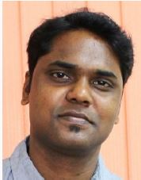

Spatial Analysis and Modelling Laboratory
Centre for Oceans, Rivers,Atmosphere, and Land Sciences (CORAL)
IIT Kharagpur, India
- Home
- About
- Contact
- Lab Group
- News
- Research
- Projects
- Field Sites
- Opportunities
- Field Photos
- Data
- Publications
- Education
- CL60028
- CL60019
- CL69005
- Weblinks
- Journals
OVERVIEW
Land use and land cover (LULC) change has been recognized as a key driver of global climate change by influencing land surface processes. LULC is interlinked with environmental and socio-economic systems. The driver plays leading role in LULC changes, and are derived from the interrelationship of the various elements such as altitude, slope, aspect, soil type, precipitation etc. are grouped as environmental; and population, literacy rate, household, drinking water facility, medical facility, etc. Remote sensing with its synoptic view, fast data acquisition and digital format suitable for computer processing, is one of the most successful and reliable data source in last few decades in recording spatio-temporal LULC change. Modeling of potential future LULC assigning a set of defined conditions offers the opportunities to examine the probable spatiotemporal changes.
COURSE OBJECTIVES
The prime objective of this proposed course is to provide participants with both the theoretical and practical experiences in all aspects of remote sensing applications in studying land sciences. The course will mainly cover the particular fields on: use of open source multi-sensor satellite remote sensing data for automated land cover mapping; use of R programming for geostatistical analysis; and use of open-source modeling platform for simulating LULC scenarios. The outcomes of these models have prominent applications, e.g., in planning, managing, policy formulation, studying impact on climate and hydrological cycle, etc.
Program Content
- Introduction to basics of Remote Sensing
- Familiarization with various open source Remote Sensing and Geospatial data
- Hands-on learning with image processing and GIS software
- Statistical and machine learning approaches for LULC classification
- Generation of landscape metrics for assessment of LULC dynamics
- Sources and generation of various geospatial data for modeling
- Hands on with R programming language
- Geostatistical analysis to quantify and qualify the drivers of landscape changes
- Introduction to open source models on LULC dynamics (Dyna-CLUE)
- Case study with Dyna-CLUE model
- Database generation, model simulation, calibration and validation
- LULC Projection and Discussion
THE FACULTY
 Coordinator
Coordinator
Dr. Mukunda Dev Behera
Dr. Mukunda Dev Behera is Associate Professor in Centre for Oceans, Rivers, Atmosphere and Land Science (CORAL), Indian Institute of Technology Kharagpur. His major research areas include Terrestrial Remote Sensing, Spatial Biodiversity, Ecological Climatology, Biomass and Carbon Sequestration, Land Use and Land Cover (LULC) Dynamics. He has contributed in developing national database on decadal LULC and Vegetation type. His current research project include: Chlorophyll Concentration estimation and plant diversity assessment in Bhitarkanika Mangrove forests using Hyperspectral Data, Climate Change effects on Indian forest cover, Species level mapping & Above Ground Biomass estimation, Estimating forest productivity using LAI and Chlorophyll florescence, Ecological Niche Modeling of Primula and Rhododendron species. He has published more than 100 research papers in different peer-reviewed journals, scientific articles, conferences, books and book chapters.

External Faculty
Mr. Pulakesh Das
Mr. Pulakesh Das is Assistant Professor in the department of Remote Sensing and GIS, Vidyasagar University, Midnapore. His major research interest includes Geo-informatics, Land Use and Land Cover (LULC) Dynamics, Climate Change Impact on Forest, Hydrological Modeling. He has also contributed in developing national database on decadal LULC. He has published about 19 research papers in various peer-reviewed journals and conferences.